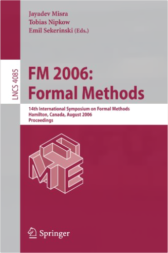
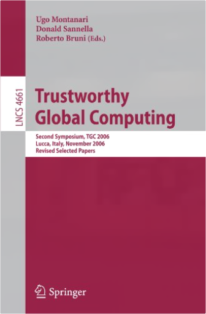
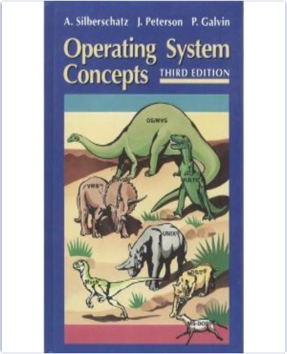

Algebraic Methodology and Software Technology: 12th International Conference, AMAST 2008 Urbana, IL, USA, July 28-31, 2008, ProceedingsJosé Meseguer, Grigore Rosu Algebraic Methodology and Software Technology: 12th International Conference, AMAST 2008 Urbana, IL, USA, July 28-31, 2008, ProceedingsJosé Meseguer, Grigore Rosu  This book constitutes the refereed proceedings of the 12th International Conference on Algebraic Methodology and Software Technology, AMAST 2008, held in Urbana, IL, USA, in July 2008. The 28 revised full papers presented together with 3 invited talks were carefully reviewed and selected from 58 submissions. Among the topics covered are all current issues in formal methods related to algebraic and logical foundations, software technology, and to programming methodology including concurrent and reactive systems, evolutionary software/adaptive systems, logic and functional programming, object paradigms, constraint programming and concurrency, program verification and transformation, programming calculi, specification languages and tools, formal specification and development case studies, logic, category theory, relation algebra, computational algebra, algebraic foundations for languages and systems, coinduction, theorem proving and logical frameworks for reasoning, logics of programs, as well as algebra and coalgebra. FM 2006: Formal Methods: 14th International Symposium on Formal Methods, Hamilton, Canada, August 21-27, 2006, ProceedingsJayadev Misra, Tobias Nipkow, Emil Sekerinski This book presents the refereed proceedings of the 14th International Symposium on Formal Methods, FM 2006, held in Hamilton, Canada, August 2006. The book presents 36 revised full papers together with 2 invited contributions and extended abstracts of 7 invited industrial presentations, organized in topical sections on interactive verification, formal modelling of systems, real time, industrial experience, specification and refinement, programming languages, algebra, formal modelling of systems, and more. Trustworthy Global Computing: Second Symposium, TGC 2006, Lucca, Italy, November 7-9, 2006, Revised Selected PapersUgo Montanari, Donald Sannella, Roberto Bruni This book constitutes the thoroughly refereed post-proceedings of the Second Symposium on Trustworthy Global Computing, TGC 2006, held in Lucca, Italy, in November 2006. The 14 revised papers presented together with two keynote lectures were carefully reviewed and selected from 32 submissions. The book starts off with activity reviews of four FP6 programmes of the European Union: Aeolus, Mobius, Sensoria, and Catnets.  FME 2001: Formal Methods for Increasing Software Productivity: International Symposium of Formal Methods Europe, Berlin, Germany, March 12-16, 2001, ProceedingsJose N. Oliveira, Pamela Zave FME 2001: Formal Methods for Increasing Software Productivity: International Symposium of Formal Methods Europe, Berlin, Germany, March 12-16, 2001, ProceedingsJose N. Oliveira, Pamela Zave FME 2001 is the tenth in a series of meetings organized every eighteen months by Formal Methods Europe (FME), an independent association whose aim is to stimulate the use of, and research on, formal methods for software development. It follows four VDM Europe Symposia, four other Formal Methods Europe S- posia, and the 1999 World Congress on Formal Methods in the Development of Computing Systems. These meetings have been notably successful in bringing - gether a community of users, researchers, and developers of precise mathematical methods for software development. FME 2001 took place in Berlin, Germany and was organized by the C- puter Science Department of the Humboldt-Universit¨at zu Berlin. The theme of the symposium was Formal Methods for Increasing Software Productivity. This theme recognizes that formal methods have the potential to do more for industrial software development than enhance software quality { they can also increase productivity at many di erent points in the software life-cycle. The importance of the theme is borne out by the many contributed papers showing how formal methods can make software development more e cient. There is an emphasis on tools that nd errors automatically, or with relatively little human e ort. There is also an emphasis on the use of formal methods to assist with critical, labor-intensive tasks such as program design and test-case generation. Operating System ConceptsJames L. Peterson, Abraham Silberschatz, Peter B. Galvin This is the most successful operating systems book on the market, with lifetime sales of well over 200,000 copies. In the fourth edition, this book enhances its reputation for clear coverage of the fundamental concepts which are the foundation of operating systems. The book has been revised to decrease coverage of older ideas, and expand discussion of new, common operating systems.  Programming Microsoft® Windows® with C#Charles Petzold Programming Microsoft® Windows® with C#Charles Petzold “Look it up in Petzold” remains the last word on Windows development. In this .NET-ready Windows programming guide, the best-selling author shows you how to get the most out of Windows Forms—the next-generation Windows programming class library. You’ll discover how to use C# to create dynamic user interfaces and graphical outputs for Windows applications. With dozens of examples of client applications to illustrate common techniques and plenty of no-nonsense advice on best programming practices, you’ll be C# sharp in no time. Topics covered in this guide include: A tour of C#Windows FormsEssential structuresAn exercise in text outputLines, curves, and area fillsTapping into the keyboardPages and transformsTaming the mouseText and fontsThe timer and timeImages and bitmapsButtons, labels, and scrollsBéziers and other splinesMenusPaths, regions, and clippingDialog boxesBrushes and pensEdit, list, and spin controlsFont funToolbars and status barsPrintingTree view and List viewMetafilesClip, drag, and drop  Multimedia Communication Systems: Techniques, Standards, and NetworksK. R. Rao, Zoran S. Bojkovic, Dragorad A. Milovanovic Multimedia Communication Systems: Techniques, Standards, and NetworksK. R. Rao, Zoran S. Bojkovic, Dragorad A. Milovanovic Multimedia Communication Systems is a comprehensive guide to the theory, principles, and practical techniques associated with implementing next-generation networked multimedia communications systems. It brings together key advances in multimedia architecture; MPEG standards; audio-visual integration; multimedia processing; storage and retrieval; service deployment; network and traffic management; QoS; and much more. Programming the World Wide WebRobert W. Sebesta Now in the Fourth Edition, Programming the World Wide Web provides a comprehensive introduction to the tools and skills required for building and maintaining server sites on the Web, teaching readers how to develop platform-independent sites using current Web development technology. Essential programming exercises are presented using a manageable progression: Readers begin with a foundational XHTML Web site and employ new languages and technologies to add features.  AlgorithmsRobert Sedgewick AlgorithmsRobert Sedgewick Hardcover: 657 pages Publisher: Addison-Wesley Pub (Sd); 2 Sub edition (April 1988) Language: English  Verified Software: Theories, Tools, Experiments: Second International Conference, VSTTE 2008, Toronto, Canada, October 6-9, 2008, ProceedingsNatarajan Shankar, Jim Woodcock Verified Software: Theories, Tools, Experiments: Second International Conference, VSTTE 2008, Toronto, Canada, October 6-9, 2008, ProceedingsNatarajan Shankar, Jim Woodcock This volume contains the proceedings of the second working conference on Verified Software: Theories, Tools, and Experiments, VSTTE 2008, held in Toronto, Canada, in October 2008. The 16 papers presented together with 4 invited talks were carefully revised and selected for inclusion in the book. This second conference formally inaugurates the Verified Software Initiative (VSI), a fifteen-year, co-operative, international project directed at the scientific challenges of large-scale software verification. The scope of the cooperative effort includes the sharing and interoperability of tools, the alignment of theory and practice, the identification of challenge problems, the construction of benchmark suites, and the execution of large-scale experiments.  Understanding Data Communications and Networks, Third EditionWilliam A. Shay Understanding Data Communications and Networks, Third EditionWilliam A. Shay Thoroughly updated for currency, this book offers a clear presentation of data communications and network fundamentals. Featuring a wide array of applications, the book fully explains concepts and supports them with case studies or descriptions of specific software and other products. Students learn the protocols of analog and digital signals, data compression, data integrity, data security, local area networks, asynchronous transfer mode (ATM), and much more. The third edition includes important information on the latest developments of the Internet. |
 Made with Delicious Library
Made with Delicious Library